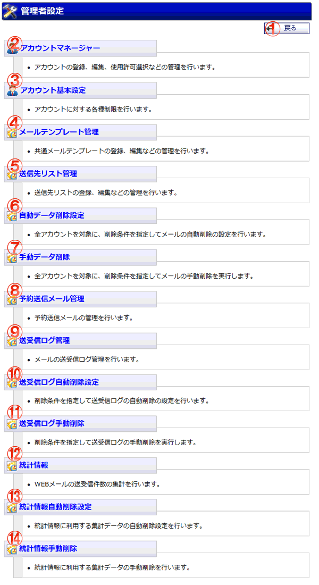

WEBメールの管理者設定メニュー画面です。

機能説明
戻るボタン遷移元の画面へ遷移します。 |
アカウントマネージャーアカウントの登録、編集、使用許可選択などの管理を行います。 |
|---|---|
アカウント基本設定アカウントに対する各種制限設定を行います。 |
メールテンプレート管理"共通"メールテンプレートの管理を行います。 |
送信先リスト管理送信先リストの管理を行います。 |
自動削除設定全アカウントを対象に、削除条件を指定してメールの自動削除の設定を行います。 |
手動データ削除全アカウントを対象に、削除条件を指定してメールの手動削除を実行します。 |
予約送信メール管理予約送信メールの管理を行います。 |
送受信ログ管理メールの送受信ログ管理を行います。 |
送受信ログ自動削除設定削除条件を指定して送受信ログの自動削除の設定を行います。 |
送受信ログ手動削除削除条件を指定して送受信ログの手動削除を実行します。 |
統計情報WEBメールの送受信件数の集計を行います。統計情報画面へ遷移します。 |
統計情報自動削除設定統計情報に利用する集計データの自動削除を行うための設定を行います。 |
統計情報手動削除任意の指定期間を経過した統計情報に利用する集計データの手動削除を行います。 |